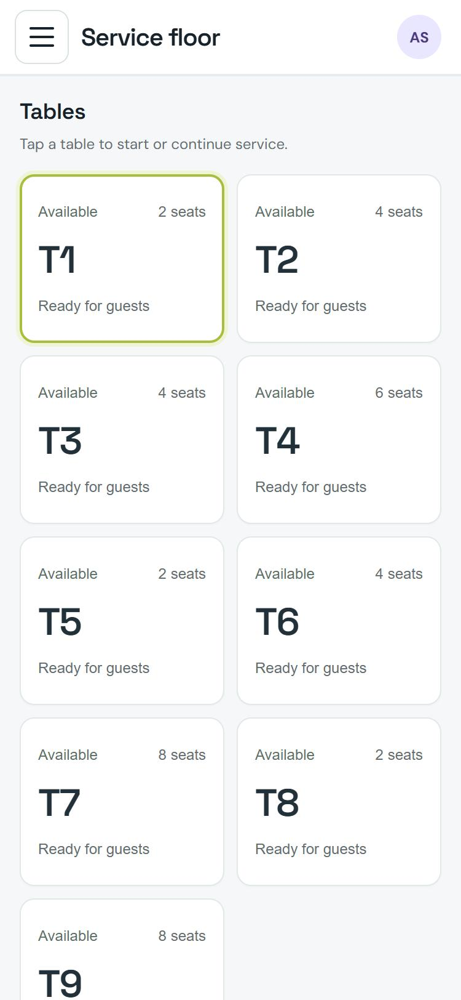
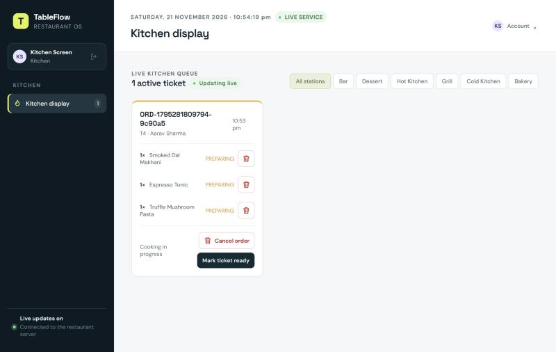

Restaurant POS · for restaurants & cafés
Table orders, kitchen tickets and billing, live on every device.
TableFlow is a restaurant POS built by ForgeArc for table service. Captains take orders on their own phones, the kitchen sees each ticket the moment it’s sent, and the bill is ready when the table asks.
Demo logins (shared and public, so data may change). The demo sleeps when unused, so the first load can take up to a minute.
- Captainaarav@tableflow.localdemo123
- Kitchenkitchen@tableflow.localdemo123
- Managerneha@tableflow.localdemo123


- Works on
- Phones, tablets and desktop
- Roles
- Captain, kitchen, manager, owner
- Updates
- Live on every device
- Payments
- Cash, card and UPI
How it works
From order to done, in four steps.
Table-service restaurants, cafés and bars that want orders, kitchen and billing on one system instead of paper KOTs.
Captain takes the order
Pick the table, tap the dishes and send them to the kitchen from your own phone.

Kitchen gets the ticket
A live kitchen display shows every ticket by station, so nothing is lost on paper.

Bill in one tap
Subtotal, service charge and total are worked out for you. Record cash, card or UPI and the table is free again.
Guests leave feedback
Each paid bill creates a one-time QR link, so guests can rate their visit and you can read every comment.
What’s included
Everything the day needs, nothing it doesn’t.
Built and owned by ForgeArc, and set up around how your business already works.
Table-wise orders
See every table at a glance: free, in service, food ready or bill requested.
Live kitchen display
Tickets reach the kitchen instantly and update on every signed-in device.
Fast, correct bills
Item prices, service charge and totals are calculated for you, so bills match the order.
Staff and roles
Owners and managers add captains and kitchen staff; each sees only their own workspace.
Menu and floor control
The owner manages menu items and tables in one place.
Guest feedback
One-time feedback links from each bill, collected for managers to review.
Screens
The real app, not a mock-up.
These screenshots are from the working product, running with sample data.
See TableFlow POS running for your business.
A 10-minute demo, on your phone or at your counter. We’ll set it up around how you already work.